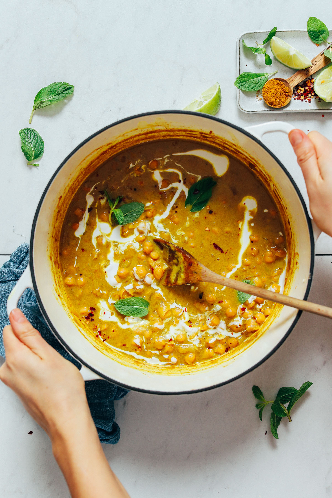

1-Pot Curried Chickpea Soup

Minimalist Baker's take on 1-Pot Curried Chickpea Soup
This 1-pot soup is inspired by Alison Roman's The Stew
which uses common Indian spices like turmeric, ginger, coriander, and mustard - and and is easy to make using ingredients you likely have on hand right now.
Consider it your kitchen secret for those “haven't been to the store in days” kind of dinners!
Ingredients for 4 Servings
Main Ingredients
- 2 Tbsp coconut oil or avocado oil
- 1 cup diced white or yellow onion
- 2 Tbsp fresh minced ginger
- 1/4 tsp red pepper flake (omit for less heat)
- 4 cloves garlic, minced
- 2 15-oz cans chickpeas, drained
- 2 15-oz cans chickpeas, drained
- 2 tbsp curry powder
- 2 14-oz cans light coconut milk, plus more for serving
- 1 cup vegetable broth(omit for thicker more stew-like texture)
- 1-2 tsp maple syrup
- 1-2 tbsp lime juice
For Serving optional
- Lime wedge
- Fresh cilantro or mint
- Crispy Chickpeas
- Coconut yogurt
Instructions
-
Heat a large pot or Dutch oven over medium heat. Once hot, add oil, onion, ginger, and red pepper flakes.
Sauté for 2-3 minutes, stirring frequently. Then add garlic and sauté for 2 minutes more, until onion is
translucent and fragrant.
-
Add chickpeas, salt, and curry powder and stir to coat. Sauté on medium-low heat for 5 minutes to
slightly brown the chickpeas and infuse them with more flavor. Stir frequently.
-
Add coconut milk and vegetable broth (omit for thicker, more stew-like texture) and stir. Bring back
to a simmer over medium heat, then reduce heat to low and simmer uncovered for 10-15 minutes.
-
Near the end of cooking, add the maple syrup and lime juice and stir. Then taste and adjust flavor as needed,
adding more salt to taste, maple syrup for sweetness, curry powder for more intense curry flavor,
red pepper for heat, or lime juice for acidity.
-
Serve hot. Optional: Garnish with mint or cilantro, coconut milk or yogurt, more lime juice, and/or crispy
chickpeas. Store leftovers covered in the refrigerator up to 4-5 days, or in the freezer up to 1 month.
Reheat on the stovetop or microwave until hot. If too thick, thin with light coconut milk or water.
Source: https://minimalistbaker.com/1-pot-curried-chickpea-soup/
Homepage